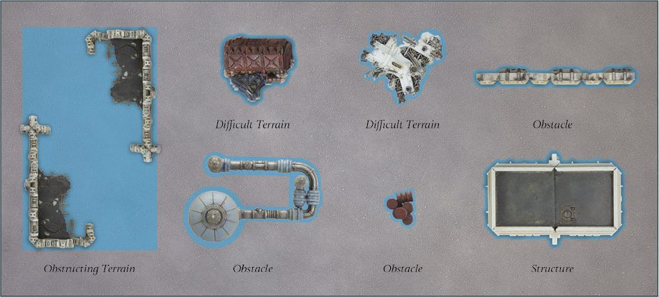
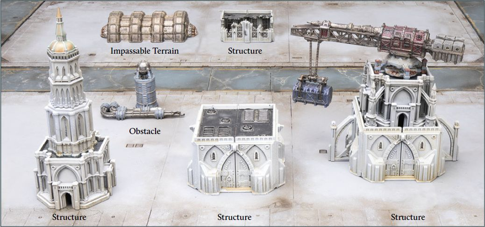

Terrain
There were many different types of battlefields fought over during the Horus Heresy, from desolate wastelands to dense, war-torn cities, and everything in between. In Legions Imperialis, the features of these battlefields are represented by terrain.
On the battlefield, terrain is defined in terms of 'areas'. These are sections of the battlefield that are affected by certain rules. These areas will be represented by some form of miniature and/or modelled scenery, such as the Citadel Civitas Imperialis buildings. The type of terrain an area represents should be easily identifiable by both players - an area of forest should contain trees, an area of river should look like a river, etc.
Terrain can take many forms. In some instances, such as when using buildings, the extent of the terrain is obvious. However, in others, such as a forest or swamp, the edge of the terrain might be less clear. As such, at the start of the battle, before deployment, players should decide between themselves which areas of the battlefield are areas of terrain, what type of terrain it is and its exact boundaries.
The area a piece of terrain occupies is determined by specific boundaries that players define before the game begins - for example, the base the trees are on might represent the area of the battlefield covered by that forest, even if that base is not entirely covered by trees. Any model within this area is affected by the terrain's rules, regardless of whether, for example, a model is walking over a flat section of that area or a rocky section.
This section covers different types of terrain and how they affect Detachments on the battlefield. It looks at the most common categories of terrain, such as Difficult or Impassable terrain, as well as terrain sub-types of those categories, which are subject to additional rules.
Any area of the battlefield not defined as a specific area of terrain is referred to as 'Open terrain'. This includes not just wide open plains, but also hills and other natural features that offer little impediment. Open terrain confers no advantage or disadvantage to models within it, however, it can still block line of sight - for example, a hill might hide models behind it, but a model that is visible on top of the hill gains no particular advantages or disadvantages.
Cover Saves
Many areas of terrain grant models within them a Cover Save. These are Save characteristics that are not modified by AP, i.e., a model with a Cover Save of 6+ will always have a value of 6+ available to it, unless a rule specifically ignores Cover Saves. Cover Saves can be used when making Save rolls. Remember, a model can choose which Save characteristic they use for a Save roll but can only ever make a single Save roll per Hit.
Types of Terrain
All areas of terrain have a type which determines the special rules that apply to it and any models that are within the area of terrain. Each type broadly defines what an area of terrain does. The most common types of terrain, as well as their effects, are described in this section. Additional types of terrain may be explored in future supplements.
Difficult Terrain
Cracked wastelands, rubble-strewn city streets and feculent bogs are all examples of landscapes that are difficult to cross.
Difficult terrain slows down most Detachments moving through it - for every 1" a model, other than an Infantry or Walker model, moves through an area of terrain designated as Difficult terrain, they count as having moved 2". Infantry and Walker models move through an area of Difficult terrain without penalty.
When a Detachment chooses an enemy Detachment with at least one model wholly within an area of Difficult terrain as a target, they suffer a -1 to all Hit rolls made against that enemy Detachment, unless the enemy Detachment is a Titan. If some of the Detachment's models are in the area of Difficult terrain and some are not, then the firing Detachment can choose to ignore this -1 modifier. However, if they do so, any resulting Hits can only be allocated to models not wholly within the area of terrain.
Models wholly within an area of Difficult terrain gain a Cover Save of 6+.
Designer's Note: Areas of Terrain
Given the scale of Legions Imperialis, the exact appearance of a piece of terrain might not necessarily equate to what it is representing; in other words, an area of terrain might represent a forest but contain only a handful of model trees, so models can be placed within it, whereas its real-life equivalent would contain hundreds or thousands of them.
Some terrain types have specific effects on line of sight, as detailed in the section that follows. If the area of terrain has no specific rules related to line of sight then it only blocks it if a piece of the terrain (such as a large rock or network of pipes) hides a model. This may seem abstract but it allows for easy resolution of how terrain affects models on the battlefield. The key thing to remember is all pieces of terrain occupy an area, regardless of their physical appearance over that defined area.

LIR67.1: A selection of areas of terrain - the boundaries of each are marked in blue.
Obstructing Terrain
Obstructing terrain includes a variety of different terrain areas, including stretches of ruins, craters and areas of woodland. Regardless of features, each represents a portion of the battlefield that provides cover to Detachments within the area.
An area of Obstructing terrain follows all the rules for Difficult terrain with the following exceptions:
Models wholly within an area of Obstructing terrain gain a 5+ Cover Save instead of the usual 6+. In addition, the -1 to Hit rolls made when firing at a Detachment within Obstructing terrain applies to all Detachment types, including Titans.
Models cannot draw line of sight through an area of Obstructing terrain. All models within an area of Obstructing terrain more than 1" from the area's boundaries are hidden from view. Models that are hidden in this way are considered out of line of sight to models outside of the area of Obstructing terrain. As such, they cannot be chosen as a target by enemy Detachments if line of sight is required when firing, nor can they target models outside of the area of terrain.
Models within the same area of Obstructing terrain can draw line of sight to each other as normal. If firing on a Detachment in the same area of Obstructing terrain, then the firing models suffer the usual -1 penalties to Hit rolls due to firing at a model in Difficult terrain and the target can use the 5+ Cover Save.
Models with the Flyer special rule can draw line of sight to any model within an area of Obstructing terrain, even if they are hidden. However, the penalties to Hit for models being in an area of Obstructing terrain still apply.
Dangerous Terrain
Toxic sludge, lava flows, minefields and xenos-infested warrens are all examples of terrain that can prove deadly to any attempting to cross it.
An area of terrain designated as Dangerous terrain can damage Detachments moving through it during the Movement phase. If at least one model from a Detachment moves through an area of terrain designated as Dangerous terrain, then the Detachment suffers damage. At the end of the Detachment's activation, it suffers a Hit for each full 1" it moved through the area of Dangerous terrain - use the model that has moved the greatest distance through the terrain to calculate the total number of Hits scored. These Hits originate in a model's Front Arc and have an AP of 0. Only models that have moved through the area of terrain can be allocated any Hits scored; if these Hits cause more Wounds than models that have moved through the area of Dangerous terrain, the excess Wounds are discarded.
When a Detachment chooses an enemy Detachment with at least one model wholly within an area of Dangerous terrain as a target, the firing Detachment suffers a -1 to all Hit rolls made against that enemy Detachment, unless that enemy Detachment is a Titan. If some of the target Detachment's models are in the area of Dangerous terrain and some are not, then the firing Detachment can choose to ignore this -1 modifier. However, if they do so, any resulting Hits can only be allocated to models not wholly within the area of terrain.
Dangerous terrain does not grant Cover Saves.
Obstacles
Low walls, tank traps and promethium pipelines are all examples of obstacles, which should be no more than 2" in height and 2" in width. The area of battlefield the Obstacle occupies is defined solely by the miniature it is represented by.
Any model can move over an Obstacle, but a model that does so counts as having moved a number of extra inches equal to the height of the Obstacle. A model cannot end its move on top of an Obstacle unless it has a Scale of 5 or higher. A model firing at a target with a Detachment Scale of 3 or lower in base to base contact with an Obstacle suffers a -1 to all Hit rolls if part of the target model is obscured from the firing model by the Obstacle (e.g., the legs of one or more figures on the base, part of a tank's hull, etc.).
A model issued with a Charge Order may Engage enemy models within 1" of the other side of an Obstacle, without moving over the Obstacle. To do so, they must move into base contact with the Obstacle in question and have line of sight to the model they wish to Engage - any enemy model that is on the other side of the Obstacle and within 1" of the Obstacle is now Engaged, or Engaged & Pinned, with the charging model, as if they were in base to base contact. Models fighting an enemy model on the other side of an Obstacle do not gain the +1 to their Fight rolls for being issued with a Charge Order.
Reinforced Obstacles
Certain Obstacles, such as tank traps, can be classified as Reinforced Obstacles - players should agree before a game starts as to which Obstacles are Reinforced and which aren't. A Vehicle or Super-heavy Vehicle cannot move over an Obstacle designated as a Reinforced Obstacle.
Impassable Terrain
Gigantic alien trees, towering rock formations and valley walls are just some examples of Impassable terrain - areas that are all but impossible to traverse in the midst of battle.
As the name suggests, models cannot move through an area of terrain designated as Impassable terrain unless instructed otherwise (such as models with the Flyer special rule). If a model is forced to move into an area of terrain designated as Impassable terrain, it stops at the terrain's edge and can go no further. Unless instructed otherwise, a model's base cannot overlap any part of Impassable terrain.
Combining Terrain Areas
Terrain pieces can be combined to create an area of terrain with different properties at different places on the terrain - a Structure within a jungle for example, or a river of lava running through an area of Difficult terrain. Where this is the case, each area should be clearly defined before the battle begins, so all players know where one area of terrain begins and the other ends. A model is only affected by the rules of the terrain it is in.
For example, an area of River cuts through a wood (Obstructing terrain). While models are moving through the wood, they are affected by the rules for Obstructing terrain; they gain the appropriate Cover Save, their Movement is slowed, depending on the Detachment type, and enemy models firing at them suffer the relevant penalties to hit.
When a Structure is placed in an area of Obstructing terrain, players may agree that the Structure is larger than the terrain. If they do, the Obstructing terrain does not block line of sight to Detachments Garrisoned within the Structure, nor does it block line of sight for Detachments outside the Obstructing terrain that wish to target the Structure.
River
Rivers are traditionally areas of water that stretch across the battlefield, though the wide variety of galactic battlefields might mean they contain flowing rivers of acid, alien bio-fluid or warp-tainted blood.
Rivers should start at a point on a battlefield edge and end at a different point on a battlefield edge or another water feature (such as a lake). The width of a River can vary, however it should be no wider than 6" at any point.
A River counts as Dangerous terrain to Infantry, Cavalry and Walkers, Impassable terrain to Vehicles and Super- heavy Vehicles and Open terrain to Knights and Titans.
Areas along the River can be designated as Fords or be crossed by Bridges. A Detachment other than Knights and Titans crossing a River at a Ford treats the River as Difficult terrain instead, while it remains Open terrain for Knights and Titans.
Bridges are areas of Open terrain that allow Detachments to cross a River. A Bridge can be targeted as if it were a Structure with an Armour Save characteristic of 5+ and 3 Wounds. If a Bridge is destroyed, any model on it must pass a Save roll using its Armour Save characteristic or be destroyed. A model not destroyed is moved the shortest possible route to a spot outside of the River's area.
Cliffs
The boundaries of an area of Cliff terrain are referred to as the Cliff Face. The Cliff Face is Impassable to all Detachments except Infantry, effectively meaning most Detachments cannot move through an area of terrain designated as a Cliff.
Infantry can scale the Cliff Face, moving over it in the same way a model moves over an Obstacle, with a height equal to the height of the terrain piece - a Cliff Face must be at least 2" in height. If an Infantry model has enough movement remaining to scale the Cliff Face, it is placed over the area of terrain's boundaries. A model must scale the Cliff Face in a single turn, and cannot end it 'halfway up' a Cliff Face. Models with the Jump Packs or Skimmer special rules (see pages 93 and 95, respectively) can move over the Cliff Face but must have enough movement to do so (e.g., if the Cliff Face is 4" tall, a model with the Jump Packs or Skimmer special rule must have 4" of movement remaining to move over the boundary, instead of ignoring it like other Obstacles).
Models in an area of Cliff can move as if in Open terrain, and can spend any movement they have remaining after scaling the Cliff Face. To move out of the area of terrain, models must scale the Cliff Face again, moving over the boundary and being placed touching the outside of it. As models that are already in an area of Cliff are treated as if in Open terrain, any model can be deployed in the area of terrain, even if it could not normally cross its boundaries. Additionally, a model can be placed over the boundary through other means (e.g., due to a model arriving on the battlefield due to the Deep Strike special rule or Disembarking from a Transport with the Flyer special rule), and act normally. However, the Cliff Face remains Impassable if the model cannot normally cross it, meaning the model cannot cross the Cliff Face boundary unless through other means.
Structures
Towering city spires, fortified bunkers and promethium processing plants are all examples of Structures.
Each individual Structure is its own area of terrain. Unless instructed otherwise, a Structure blocks line of sight and is classed as Impassable terrain to all models except Infantry. Infantry Detachments can Garrison Structures - see page 72 for more details.

LIR71.1: A series of areas of Terrain constructed using Civitas terrain sets, detailing examples of Structures or non-Structures.
Structures are subject to additional special rules depending on their type. A Structure's type is determined before the start of each game alongside all other pieces of terrain. Each Structure is assigned a type from the table below, based upon its size and 'function':
| Structure Type | Armour Save (Sv) | Garrison Number (GN) | Wounds | Structure Bonus | Cover Save |
|---|---|---|---|---|---|
| Civitas Imperialis | 5+ | 1 | 2 | -2 to Hit rolls +2 CAF | 4+ |
| Militas Imperialis | 3+ | 2 | 3 | -2 to Hit rolls +3 CAF | 4+ |
| Imperialis Grandus | 4+ | 3 | 3 | -2 to Hit rolls +2 CAF | 4+ |
| Fortification | 2+ | 1 | 2 | -2 to Hit rolls +3 CAF | 3+ |
As shown in the table, each Structure type has a set of characteristics associated with it:
- The Armour Save (Sv) characteristic represents how structurally sound a Structure is and how likely it is to resist incoming fire.
- The Garrison Number (GN) describes the maximum number of Detachments which can Garrison a Structure of that type. The number of models within a Detachment does not matter, only the number of Detachments Garrisoned in a Structure.
- The Wounds characteristic represents how much damage a Structure can take before it collapses.
- The Structure Bonus characteristic is a set of modifiers that applies to models and Detachments that are Garrisoned inside the building. Models firing upon a Detachment Garrisoned within a Structure suffer a penalty to their Hit rolls as shown in the table. In addition, models Garrisoned within a Structure gain a bonus to their CAF characteristic equal to the value shown in the table.
- All models Garrisoned within a Structure gain a Cover Save characteristic equal to the value shown in the Cover Save column.
Structures in the Movement Phase
An area of terrain designated as a Structure counts as Impassable terrain to all Detachments except Infantry. Most Structures allow Infantry to Garrison within them.
Garrisoning Structures
Infantry models can move through a Structure as if it were Open terrain, or a Detachment of Infantry can choose to Garrison the Structure. Unless a model's Detachment intends to Garrison a Structure, it cannot end its movement overlapping the Structure's area. Infantry Detachments can be deployed Garrisoned within a Structure, so long as the Structure is completely within the player's deployment zone.
To Garrison a Structure, a Detachment must end its activation with at least half (rounding up) of the total number of models within the Detachment in base contact with the building during the Movement phase. The controlling player then declares that the Detachment is Garrisoning the Structure, so long as an enemy Detachment is not currently Garrisoned within it. If possible, place a model from the Detachment on top of the Structure to indicate it is Garrisoned or use a token or similar marker if a model cannot be placed on top of the Structure. Any models that cannot be placed on top of the Structure are placed to the side of the battlefield (but do not count as destroyed). Once a Detachment has Garrisoned a Structure, it cannot move any further that phase.
Each Structure has a maximum number of Detachments that can Garrison within it at any one time, determined by the Structure's Garrison Number (GN). Other friendly models can still move through a Structure even if the maximum possible number of Detachments have Garrisoned it - these models simply cannot end their movement overlapping the Structure's area.
A model that is Garrisoned within a Structure can move as normal in subsequent phases and treats the entire area of the Structure as its base. When moving out of a Structure, Garrisoned models choose a point on the Structure and measure from there. If one model from a Detachment moves out of a Structure, then the entire Detachment must do so as well, and it is no longer Garrisoning the Structure.
Engaging Garrisoned Structures
Models Garrisoned within Structures have no Engagement Zone. However, models cannot move through a Structure Garrisoned by enemy models, nor can they end their movement in base contact with the Structure unless they are an Infantry model issued with a Charge Order, a Titan or a model that has a weapon with the Wrecker trait (see page 85). Models in base to base contact with a Structure count as Engaged with all enemy Detachments Garrisoned within the Structure. Unless instructed otherwise, other Detachment types do not count as Engaged with Garrisoned Detachments and thus both can fire as normal in a subsequent phase, including at one another if eligible to do so.
Structure Types
On the battlefield, the term 'Structure' covers all manner of constructions, from armoured bunkers to towering city spires and everything in between. To facilitate the myriad possible designs, Structures are organised into broad categories that cover nearly anything a player can conceive of and build. These categories also help speed up gameplay, with Structures being easily identifiable and their characteristics determined at a glance.
Civitas Imperialis represents buildings commonly seen in Imperial cities across the galaxy and is aptly represented by the terrain range of the same name. Militas Imperialis represents military structures, such as command centres or structures converted into temporary bastions. Imperialis Grandus represent landmarks, such as sprawling monuments to the Imperial Truth or governmental buildings. Lastly, Fortifications represent structures such as Bunkers and other dedicated defensive points.
If players wish, they can add further depth to Structures. This can be done by tying a Structure's Garrison Number to its size - the larger a building, the greater its GN. The size of Structure should be determined by the area of the battlefield it occupies. A good rule of thumb for a civilian Structure is if it is at least 2" x 2" in size then it has a GN of 1, if it is at least 4" x 4" in size it has a GN of 2, and if it is at least 6" x 6" in size, it has a GN of 3. Similar rules can be applied to other Structure types.
Structures in the Combat Phase
Structures can be targeted and fired upon as if they were a Detachment, although not all weapons can damage Structures. In addition, models Garrisoned within a Structure have additional rules that apply to them when Firing or being fired upon.
Targeting Structures
Models can nominate Structures as a target when Firing as if it were a Detachment, so long as it meets all other requirements for an eligible target. A Structure does not need to have a Detachment Garrisoned within it to be chosen as a target.
When a Structure is chosen as a target, make Hit rolls as normal, adding 1 to the result of all Hit rolls made.
A Structure can only be damaged by certain weapons - any Hit caused against a Structure is automatically discarded before Save rolls are made, unless the weapon has a Trait that explicitly states it can damage Structures (for example, Heavy Barrage or Demolisher).
The opposing player then makes a Save roll for each Hit that is scored. Save rolls for Structures are made using 2D6. After applying any modifiers, including the weapon's AP characteristic, compare the result against the Armour Save characteristic of the Structure.
If the result is equal to or greater than the Structure's Armour Save characteristic, no damage is done and the Hit is discarded. If the result of the roll is less than the Structure's Armour Save characteristic, the Structure suffers a Wound. If a Structure drops to 0 Wounds, it collapses.
Collapsing Structures
When a Structure collapses, it is removed from the battlefield and replaced with an area of Difficult terrain that occupies roughly the same area as the Structure. If any models were Garrisoned within the Structure, each model Garrisoned within the Structure automatically suffers a Hit and makes a Save roll as normal - this hit has an AP of -1. Any model that fails this Save roll is destroyed, regardless of the number of Wounds it has.
Any model that survives is then placed by the controlling player within the new area of Difficult terrain or as close as possible to it if no space remains.
Structures and Firing
Models Garrisoned within a Structure may fire at enemy Detachments as normal. When firing, models Garrisoned within a Structure treat the entire area of the Structure as their base, and can draw line of sight from any point of the Structure.
Similarly, enemy models may fire upon Detachments Garrisoned within a Structure, as long as they can see part of the Structure and are within range of that part. If more than one Detachment is Garrisoned within a Structure, then the firing player must nominate which Detachment or Detachments are the target. Any Hit rolls made against Detachments Garrisoned within a Structure suffer negative modifiers to their Hit rolls, depending on the Structure Type - see the Structure Bonus column on the Structure table on page 71.
Structures and Fights
If one or more Detachments are Engaged with one or more enemy Detachments that are Garrisoned within a Structure, then those Detachments are in a Combat.
Fights involving Garrisoned models are resolved as normal, with models paired off as described in the Combat section (see page 54). Any model in base contact with a Structure counts as being in base contact with all models within the Structure for the purposes of pairing off Fights, and thus are paired off accordingly.
As normal, the player with Initiative determines which models are paired off with one another. Models must first be paired off into one-on-one Fights. If all of a player's models have been paired off into one-on-one Fights and the other player still has models not paired off, then the player with Initiative pairs off these models into two-on- one Fights, then three-on-one Fights and so on, until all models have been paired off.
In other words, models can only be paired off against multiple enemy models if one player has excess models, at which point the number of models that can be paired off against each enemy model increases by 1.
Models that are Garrisoning a Structure gain bonuses to their CAF characteristic depending on the type of Structure they are Garrisoned within. The bonus they gain is shown in the Structure Bonus column of the Structure table on page 71.
Detachments Garrisoned within a Structure only have to make a Morale check and Withdraw if they lose the Combat and at least one enemy model is in base contact with the Structure; if the Garrisoned Detachments lost the Combat but no enemy model is in base contact with the Structure, then no Morale checks are made and the Garrisoned Detachments do not Withdraw. Otherwise, they Withdraw as normal.
If all Detachments Garrisoning a Structure are destroyed during a Combat or Withdraw after the Combat is resolved, any enemy Infantry Detachment that was Engaged with them may immediately Garrison the Structure. For a Detachment to Garrison the Structure, it must have at least one model in base contact with it.
Targeting Structures
For the purposes of choosing a target for a firing model, rules that refer to models and Detachments also apply to the Structure. For example, if a weapon targets all Detachments within 4" of the firing model and can also damage Structures, then all Structures within 4" are included as part of the attack. Where exceptions are made, such as in the case of splitting the dice of a Titan's weapon (see page 76), it will be noted.